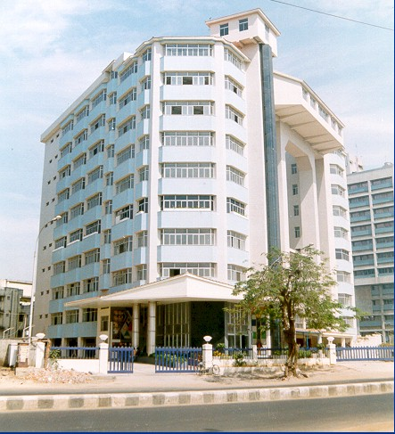

There are Eight Central Prisons for confining causal offenders one Central Prison for habitual offenders and three Special Prisons for Women,
one Borstal School for Youth Offenders (Aged 18 to 25 years), Three Open Air Jails, Nine District Jails, Two Special Sub Jail for Men,
87 Sub Jails for Men, Three Special Sub Jail for Women and 8 Sub Jails for Women, 11 Borstal Schools for pre convicted adolescent offenders.
The capacity of Central Prison ranges from 723 to 2517, Special Sub Jails from 84 to 224, District Jails from 200 to 405, Sub Jails from 18 to 143,
Special Prison for Women 469 to 600, Open Air Jail is 150, farm jail is 10 and that of Borstal School is 40.

The branch which is headed by Chief Probation Superintendent, is responsible for the implementation of the Probation of Offenders' Act, 1958 and also
for rehabilitation of offenders. The Sanctioned strength of Regional Probation Officers are 12 and Probation Officers are 96 in this Branch. They make
enquiries regarding the behaviour pattern of the offenders and the environmental conditions in which they live and submit report to the courts when
called for and also supervise the probationers ( Persons placed under the supervision of the Probation Officers by the Court) apart from supervising
the behaviour of the offenders released prematurely on bond and inmates who are discharged from the Borstal School. They also arrange financial assistance
through Nationalized Banks and N.G.Os to the discharged prisoners and Probationers for their rehabilitation. This State was the first to implement Probation
under Madras Probation of offenders Act,1936.
| LOCATION |
DISTRICT JURISDICTION |
| Central Prison Puzhal - I |
All Convict Prisoners of Chennai, Thiruvallur, Kancheepuram |
| Central Prison, Puzhal - II |
All Remand Prisoners of Chennai, Thiruvallur, Kancheepuram |
| Special Prison for Women, Puzhal |
All Women Prisoners of Chennai Thiruvallur, Kancheepuram |
| Central Prison, Vellore |
Dharmapurai, Vellore,Thiruvannamalai and Krishnagiri |
| Special Prison for Women, Vellore |
Women Prisoners of Salem, Namakkal, Dharmapuri,
Coimbatore, Erode, Nilgiris, Cuddalore, Villupuram, Triuvannamalai, Vellore,
Thanjavur, Tiruvarur, Nagapattinam. |
The new Prison complex at Puzhal was inaugurated by the Hon’ble Chief Minister on 26.11.2006. The prison complex consists of three prisons
viz. Central Prison I Puzhal with a capacity of 1250, for accommodating convict prisoners, Central Prison II Puzhal with a capacity of 1250,
for accommodating remand prisoners and Special Prison for Women Puzhal with a capacity of 500 for accommodating women prisoners. The prison
complex is situated in a sprawling area of about 212 acres. The construction works were carried out by the Tamil Nadu Police Housing Corporation Ltd.
The Administration of prisons is accorded utmost priority by Government. Concerted efforts are taken to improve the all round welfare measures of
prisoners and basic infrastructure facilities. While strengthening the safety and security of Prisons, administrative changes are being made in Prisons.
The establishment of Prisoners' Adalat in the Prisons of this State is the first of its kind in the country.